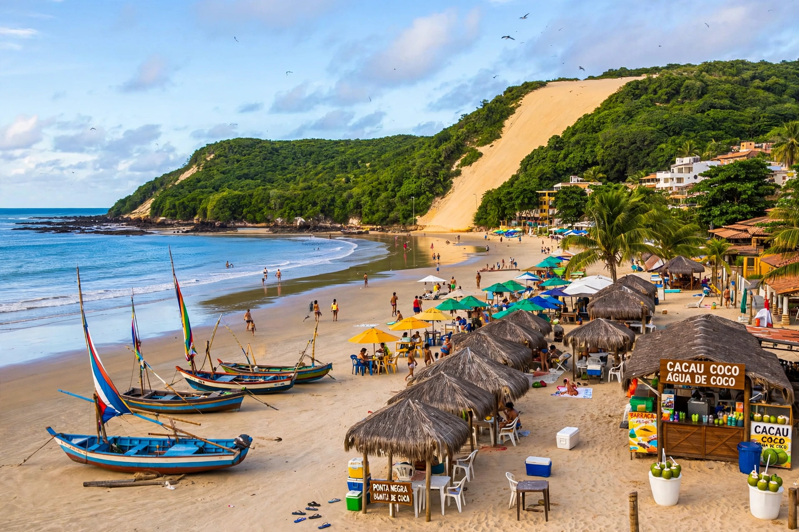

| Rio Grande do Norte | |
 | |
| Country | Brazil |
|---|---|
| Capital | Natal |
| Area | 52,797 km² |
| Population | about 3.3 million |
| Region | Northeast |
Rio Grande do Norte is a state in northeastern Brazil, occupying the country's easternmost bulge, bordered by the Atlantic Ocean, Ceará to the west and Paraíba to the south. Its capital is Natal, founded on 25 December 1599 (hence its name, "Christmas" in Portuguese).
The state is named after the Potengi River ("Rio Grande"). It is famous for its long coastline of beaches, dunes and salt flats, including Genipabu and Ponta Negra. The Barreira do Inferno Launch Center near Natal is one of Brazil's rocket launch sites, and the state hosts much of the country's wind-energy generation and sea-salt production (around Macau and Areia Branca).
The territory saw French trading incursions and a period of Dutch occupation in the 17th century. During the Second World War, Natal's proximity to West Africa made its airfields — the "Trampoline of Victory" — a vital staging point for Allied aircraft crossing the South Atlantic, visited by US President Franklin D. Roosevelt in 1943.